第 14 章 扩散传质#
本章解决：混合物中只要存在组分浓度差，就必然发生传质——这一章处理它的"导热副本"：扩散传质。先给混合物浓度的一整套度量（质量浓度、摩尔浓度、质量分数、摩尔分数）与换算关系，立起与傅里叶定律同构的菲克定律，认识输运物性质扩散率；再分清扩散通量与绝对通量（平流）的分解、以及"静止介质近似"什么时候成立。然后导出与热方程逐项对应的组分守恒（质扩散）方程，把第 2～5 章的导热解法整体平移过来；最后补上导热里没有的两件难事：界面两侧浓度不连续带来的三类边界条件（拉乌尔定律、亨利定律、溶解度）与化学发挥的作用（表面催化反应、体积均匀反应），以及瞬态扩散对半无限大物体解的类比。对流那一半（对流传质系数、舍伍德数、施密特数）第 6 章已经立好，热-质类比在本章合龙。
14.0 本章导图#
14.1 物理起源与速率方程#
从物理起源到速率方程，扩散传热与扩散传质是强类比关系。本章通篇盯住这条类比主线。
14.1.1 物理起源#
想象一个腔体：两种不同的气体组分 A、B，温度、压强相同，中间用隔板分开。抽掉隔板（不扰动流体），两种组分都会被输运——这就是扩散。图 14.1 是隔板抽走后不久的情形：A（浅色点）的浓度沿 \(x\) 递减，B 的浓度沿 \(x\) 递增。传质沿浓度降低的方向进行：A 净向右输运，B 净向左输运。
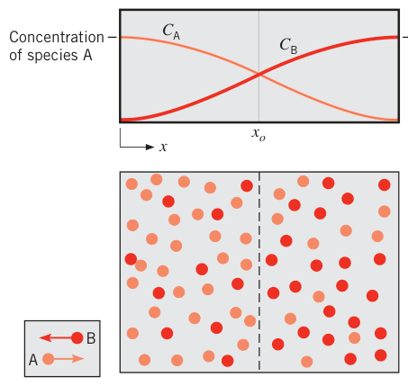
物理机制与第 1 章讲导热时一模一样：在假想平面 \(x_o\) 处，分子运动是随机的，向左、向右穿过的概率相等。但平面左侧 A 浓度高，于是从左向右穿过平面的 A 分子更多；B 则相反。净结果就是 A 向右、B 向左的组分输运。足够长时间后，A、B 浓度均匀，净输运停止。
质量扩散在气体、液体、固体中都发生。但分子间距强烈影响扩散：气体中最容易、液体次之、固体最难。三类例子：汽车尾气中的一氧化二氮在空气中的扩散（气）、水中溶解氧的扩散（液）、氦在派热克斯玻璃中的渗透（固）。
14.1.2 混合物的组成#
本章全在跟混合物打交道。先补热力学里的一套词汇：混合物由两种以上化学组分（species）构成，任一组分 \(i\) 的量可用质量浓度（mass density，组分质量密度）\(\rho_i\)（kg/m³）或摩尔浓度（molar concentration）\(C_i\)（kmol/m³）量化，二者由组分分子量 \(\mathcal{M}_i\)（kg/kmol）联系起来：
把所有组分加起来，得混合物的总质量密度与总摩尔浓度：
组分的量还可以用两个"分数"表达——质量分数（mass fraction）与摩尔分数（mole fraction）：
由式 (14.2)、(14.3) 立刻得到归一化条件：
原书脚注：别把 \(x_i\) 和坐标 \(x\) 弄混
\(x_i\) 是组分 \(i\) 的摩尔分数，\(x\) 是空间坐标。本书的摩尔分数永远带组分下标，看到 \(x\) 裸写就是坐标。
对理想气体混合物，各组分的质量浓度、摩尔浓度可直接用分压（partial pressure）\(p_i\) 表示（理想气体定律逐组分适用）：
其中 \(R_i\) 是组分 \(i\) 的气体常数，\(\mathcal{R}\) 是通用气体常数。配合道尔顿分压定律（Dalton's law）：
立得摩尔分数与分压的换算：
表 14-甲 浓度度量速查（本章的"词汇表"）
| 量 | 记号 | 单位 | 一句话 |
|---|---|---|---|
| 组分质量浓度 | \(\rho_i\) | kg/m³ | 每立方米混合物中组分 \(i\) 的质量 |
| 组分摩尔浓度 | \(C_i\) | kmol/m³ | 每立方米混合物中组分 \(i\) 的千摩尔数 |
| 混合物质量密度 | \(\rho\) | kg/m³ | 所有组分质量浓度之和 |
| 混合物摩尔浓度 | \(C\) | kmol/m³ | 所有组分摩尔浓度之和 |
| 质量分数 | \(m_i\) | 无量纲 | \(\rho_i/\rho\)，全加和为 1 |
| 摩尔分数 | \(x_i\) | 无量纲 | \(C_i/C = p_i/p\)（理想气体），全加和为 1 |
拓展：质量分数与摩尔分数的换算
两套"分数"不能直接画等号，桥是分子量：\(m_i = x_i \mathcal{M}_i / \sum_j x_j \mathcal{M}_j\)，反过来 \(x_i = (m_i/\mathcal{M}_i)/\sum_j (m_j/\mathcal{M}_j)\)。拿空气练一遍：氧气摩尔分数 \(x_{O_2} \approx 0.21\)，氮气 \(x_{N_2} \approx 0.78\)，换质量分数得 \(m_{O_2} = 0.21 \times 32 / (0.21 \times 32 + 0.78 \times 28) \approx 0.23\)。干空气"质量上氧占 23%、摩尔上氧占 21%"，两套口径记住哪个是哪个，后面算扩散通量时不会乱。
14.1.3 菲克定律#
扩散传热与扩散传质机制相似，速率方程也同型。对 A、B 二元混合物中的组分 A，质量扩散的速率方程叫菲克定律（Fick's law），矢量形式为：
或者用摩尔口径：
跟傅里叶定律（式 2.3）摆在一起看，结构完全同构：傅里叶定律定义了导热系数，菲克定律定义了第二个重要输运物性——二元扩散系数（binary diffusion coefficient），又称质扩散率（mass diffusivity）\(D_{AB}\)，单位 m²/s。
逐项拆开：
- \(\mathbf{j}_A\)（kg/(s·m²)）：组分 A 的扩散质量通量（diffusive mass flux）——单位时间、单位垂直面积上靠扩散转移的 A 的量，正比于混合物总质量密度 \(\rho = \rho_A + \rho_B\) 与质量分数梯度 \(\nabla m_A\)（\(m_A = \rho_A/\rho\)）；
- \(\mathbf{J}_A^*\)（kmol/(s·m²)）：组分 A 的扩散摩尔通量（diffusive molar flux），正比于混合物总摩尔浓度 \(C = C_A + C_B\) 与摩尔分数梯度 \(\nabla x_A\)（\(x_A = C_A/C\)）；
- 负号：组分沿浓度降低的方向扩散；
- 当总质量密度 \(\rho\)（或总摩尔浓度 \(C\)）为常数时，两式分别简化为 \(j_A = -D_{AB}\nabla \rho_A\)、\(J_A^* = -D_{AB}\nabla C_A\) 的形式——梯度可以直接换成浓度梯度。
拓展：菲克定律只是"普通扩散"
式 (14.12)、(14.13) 内含一个假设：扩散仅由浓度梯度驱动。实际上温度梯度（Soret 效应/热扩散）、压强梯度、外力（电场、磁场）也能驱动组分迁移。绝大多数工程问题里这些高阶效应可以忽略，浓度梯度是唯一显著的驱动势，这种情况叫普通扩散（ordinary diffusion）。本书只处理普通扩散；热扩散等效应见 Bird 等人的传质专著。
14.1.4 质扩散率#
二元气体混合物 A+B 的质扩散率可以靠分子运动论估计。设气体为理想气体，可推得：
其中 \(T\) 用开尔文，\(\bar{c}\) 是分子平均速度，\(\lambda_{\mathrm{mfp}}\) 是分子平均自由程。2.2.1 节说过：\(\bar{c}\) 随温度升高、随分子量减小而增大；\(\lambda_{\mathrm{mfp}}\) 与气压成反比。所以：
- 温度升高 → \(D_{AB}\) 增大（约 \(T^{3/2}\)）；
- 分子量越小 → \(D_{AB}\) 越大；
- 压强升高 → \(D_{AB}\) 减小（约 \(1/p\)）。
式 (14.14) 适用于有限的温度、压强范围，但特别有用：拿 298 K 的查表值外推到别的温度（例 14.1 就这么干）。液体溶液只能全靠实验：少量溶质 A 溶于溶剂 B 时，\(D_{AB}\) 随温度升高而增大。气体、液体、固体在固体中的扩散机制极其复杂，没有普适理论，实验数据也有限。常用数据查表 A.8。
量级感（记牢，例 14.1 会展开）：气体 \(10^{-5} \sim 10^{-4}\ \mathrm{m^2/s}\)；液体 \(10^{-10} \sim 10^{-9}\ \mathrm{m^2/s}\)；固体 \(10^{-14} \sim 10^{-12}\ \mathrm{m^2/s}\)——横跨八个数量级以上。
拓展：三个扩散率是一家人
动量扩散率 \(\nu = \mu/\rho\)（运动黏度）、热扩散率 \(\alpha = k/(\rho c_p)\)、质扩散率 \(D_{AB}\) 单位全是 m²/s，物理图像全是"分子随机运动把各自的量（动量、能量、组分）往低处搬"。气体里三者同量级、同源（分子运动论都能推出来）；液体和固体里差异巨大——第 6 章的普朗特数 \(Pr = \nu/\alpha\)、施密特数 \(Sc = \nu/D_{AB}\)、路易斯数 \(Le = \alpha/D_{AB}\) 就是在比较这三根数轴的相对位置。
【例 14.1】氢在气、液、固三种介质中的扩散通量
已知（Known）：293 K 下氢（组分 A）分别在空气、液态水、铁（组分 B）中扩散。某位置处的浓度梯度 \(dC_A/dx = 1\ \mathrm{kmol/(m^3 \cdot m)}\)。氢的摩尔分数 \(x_A \ll 1\)。
求（Find）：摩尔、质量两种口径的组分通量；三种介质中质扩散率与热扩散率的对比。
示意图（Schematic）：
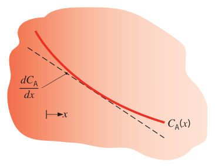
假设（Assumptions）：稳态条件。
物性（Properties）：表 A.8，氢–空气（298 K）：\(D_{AB} = 0.41 \times 10^{-4}\ \mathrm{m^2/s}\)；氢–水（298 K）：\(D_{AB} = 0.63 \times 10^{-8}\ \mathrm{m^2/s}\)；氢–铁（293 K）：\(D_{AB} = 0.26 \times 10^{-12}\ \mathrm{m^2/s}\)。表 A.4，空气（293 K）：\(\alpha = 21.6 \times 10^{-6}\ \mathrm{m^2/s}\)。表 A.6，水（293 K）：\(k = 0.603\ \mathrm{W/(m \cdot K)}\)、\(\rho = 998\ \mathrm{kg/m^3}\)、\(c_p = 4182\ \mathrm{J/(kg \cdot K)}\)。表 A.1，铁（300 K）：\(\alpha = 23.1 \times 10^{-6}\ \mathrm{m^2/s}\)。
分析（Analysis）：先用式 (14.14) 把氢–空气的质扩散率从 298 K 修正到 293 K：
氢是稀组分（\(x_A \ll 1\)），介质的热物性就取主体介质（组分 B）的值。水的热扩散率：
热扩散率与质扩散率之比就是第 6 章式 (6.50) 定义的路易斯数 \(Le\)。
摩尔通量用菲克定律（式 14.13）。A 是稀组分，总摩尔浓度近似为常数，故 \(J_A^* = -D_{AB}\,dC_A/dx\)。氢–空气混合物中：
质量通量：
三种介质的结果汇总：
| 组分 B | \(\alpha\) (m²/s) | \(D_{AB}\) (m²/s) | \(Le = \alpha/D_{AB}\) | \(j_A\) 大小 (kg/(s·m²)) |
|---|---|---|---|---|
| 空气 | \(21.6 \times 10^{-6}\) | \(0.40 \times 10^{-4}\) | 0.54 | \(8 \times 10^{-5}\) |
| 水 | \(0.144 \times 10^{-6}\) | \(6.3 \times 10^{-9}\) | 23 | \(1.3 \times 10^{-8}\) |
| 铁 | \(23.1 \times 10^{-6}\) | \(2.6 \times 10^{-13}\) | \(8.9 \times 10^{7}\) | \(5.2 \times 10^{-13}\) |
（浓度梯度取正号，通量实际指向 \(x\) 负方向，表中列大小。）
点评（Comments）：
- 三种介质的热扩散率只差两个数量级——第 5 章讲过，这决定了瞬态导热响应快慢的差异。质扩散率却横跨 8 个数量级以上：气体最快、固体最慢。主体介质是气体、液体还是固体，组分响应传质的速率完全不同。
- 路易斯数在气体里通常量级为 1（本例空气 0.54）：气体里同时进行的热扩散与质扩散推进速率相近。液体和固体里导热传能比组分扩散快得多（\(Le\) 达 23 乃至 \(10^{7}\) 量级）——热跑得快、质走得慢。
14.2 非静止介质中的传质#
只关心静止介质问题的读者可以直接跳到 14.3 节——这是原书脚注明说的路线。
14.2.1 绝对通量与扩散通量#
扩散传质类比导热，扩散通量（式 14.12、14.13）类比傅里叶定律给出的热流密度。但传质有一个导热没有的纠缠：扩散本身就是分子从一个位置挪到另一个位置，这种分子尺度的运动在很多情形下会诱发整体流动。有整体运动就有平流。本节定义包含扩散与平流两部分贡献的绝对通量（absolute flux，又称总通量）。
绝对质量（或摩尔）通量以固定坐标系为参照。对二元混合物 A+B，组分 A 的绝对质量通量 \(\mathbf{n}_A''\) 与组分 A 的绝对速度 \(\mathbf{v}_A\) 相联系：
\(\mathbf{v}_A\) 解释为混合物中某点附近小体积元内所有 A 粒子的平均速度。同样对 B 有：
混合物的质量平均速度（mass-average velocity）\(\mathbf{v}\) 由总质量通量的要求定义：
注意 \(\mathbf{v}_A\)、\(\mathbf{v}_B\)、\(\mathbf{v}\) 与各通量都是绝对量——相对固定在空间的坐标轴定义。质量平均速度 \(\mathbf{v}\) 有两个用处：乘上总质量密度就是相对固定轴的总质量通量；更重要的是，写质量、动量、能量守恒方程（第 6 章）用的正是它。
组分 A 相对混合物质量平均速度的质量通量：
\(\mathbf{n}_A''\) 是组分 A 的绝对通量，\(\mathbf{j}_A\) 是组分的相对（扩散）通量——正是菲克定律式 (14.12) 给的那个量，代表组分相对混合物平均运动的运动。由式 (14.15)、(14.19) 立得通量分解：
一句话：绝对通量 = 扩散贡献（A 相对混合物的运动）+ 平流贡献（A 随混合物整体一起走）。代入式 (14.12)、(14.17)：
式 (14.21) 右端第二项为零时，组分 A 纯靠扩散传质——与纯导热情形完全对应。哪些特殊场合会出现，后面 14.3 节见分晓。
同样的账对 B 也算一遍。B 的扩散通量：
由式 (14.17)、(14.19)、(14.22) 可知，二元混合物中两个扩散通量互相抵消：
把式 (14.12)、(14.23) 代入式 (14.24)，并注意二元混合物 \(m_A + m_B = 1 \Rightarrow \nabla m_A = -\nabla m_B\)，得：
二元扩散系数不分方向——A 在 B 中的扩散系数等于 B 在 A 中的扩散系数。B 的绝对通量分解式：
以上都是质量口径，换成摩尔口径完全平行。绝对摩尔通量：
混合物的摩尔平均速度（molar-average velocity）\(\mathbf{v}^*\) 定义为：
注意：摩尔平均速度不等于质量平均速度，所以它不能进第 6 章那套守恒方程。它的意义在于：乘上总摩尔浓度 \(C\) 就得到相对固定坐标的总摩尔通量 \(\mathbf{N}''\)。组分 A 相对摩尔平均速度的扩散摩尔通量为：
组合式 (14.27)、(14.30) 得摩尔口径的通量分解：
再由式 (14.13)、(14.28)：
与式 (14.21) 平行：右端第二项为零时，传质纯靠扩散。二元混合物同样有扩散摩尔通量守恒：
表 14-乙 两套口径的通量词汇对照
| 量 | 质量口径 | 摩尔口径 |
|---|---|---|
| 组分绝对通量 | \(\mathbf{n}_A'' = \rho_A \mathbf{v}_A\) | \(\mathbf{N}_A'' = C_A \mathbf{v}_A\) |
| 总通量 | \(\mathbf{n}'' = \rho \mathbf{v}\) | \(\mathbf{N}'' = C \mathbf{v}^*\) |
| 混合平均速度 | \(\mathbf{v} = m_A \mathbf{v}_A + m_B \mathbf{v}_B\) | \(\mathbf{v}^* = x_A \mathbf{v}_A + x_B \mathbf{v}_B\) |
| 扩散通量 | \(\mathbf{j}_A = \rho_A(\mathbf{v}_A - \mathbf{v})\) | \(\mathbf{J}_A^* = C_A(\mathbf{v}_A - \mathbf{v}^*)\) |
| 分解式 | \(\mathbf{n}_A'' = \mathbf{j}_A + \rho_A \mathbf{v}\) | \(\mathbf{N}_A'' = \mathbf{J}_A^* + C_A \mathbf{v}^*\) |
| 二元互抵 | \(\mathbf{j}_A + \mathbf{j}_B = 0\) | \(\mathbf{J}_A^* + \mathbf{J}_B^* = 0\) |
拓展：为什么守恒方程只用质量平均速度
第 6 章的守恒对象是质量、动量、能量这些"按千克计"的量，它们天然以质量平均速度搬运。摩尔平均速度 \(v^*\) 按千摩尔加权，两套加权不一样（除非所有组分分子量相等），用 \(v^*\) 写动量方程会把力项搞乱。本书后面凡是"混合物流动"一律用 \(\mathbf{v}\)；\(\mathbf{v}^*\) 只在摩尔通量分解式 (14.31)、(14.32) 里出现。记住配对：\(\mathbf{v}\) 配 \(\rho\) 与 \(\mathbf{n}''\)，\(\mathbf{v}^*\) 配 \(C\) 与 \(\mathbf{N}''\)，别串线。
14.2.2 立柱中的蒸发#
现在看一个能把平流项逼出来的经典场景（图 14.2）。竖管底部有液体 A，管内是二元气体混合物 A+B，管顶（\(x = L\)）维持固定的组分浓度 \(C_{A,L}\)、\(C_{B,L}\)，系统恒温恒压。液–气界面（\(x = 0\)）上气液两相平衡，蒸气浓度对应饱和状态。由于 \(C_{A,0} > C_{A,L}\)，A 从液面蒸发、向上扩散。
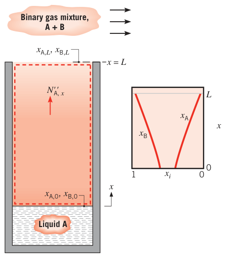
稳态、一维、无化学反应时，A 不能在控制体内积累，其绝对摩尔通量沿立柱不变：
由 \(C = C_A + C_B\) 知全柱 \(x_A + x_B = 1\)。\(C_{A,0} > C_{A,L}\) 给出 \(x_{A,0} > x_{A,L}\)、\(x_{B,0} < x_{B,L}\)，所以 \(dx_B/dx > 0\)：气体 B 在向下扩散（从管顶向液面）。可是 B 不能溶进液体 A——稳态要维持，必须处处 \(N_{B,x}'' = 0\)。向下扩散的 B 唯一的出路：被向上的平流精确抵消。
这个结论很重要：要正确预测摩尔分数分布 \(x_A(x)\)、\(x_B(x)\)、浓度分布 \(C_A(x) = x_A(x)C\)、\(C_B(x) = x_B(x)C\) 以及液体 A 的蒸发速率，必须把立柱中气体的平流算进去。把 \(N_{B,x}'' = 0\) 代入式 (14.32)：
或者由式 (14.28) 写成：
式 (14.36) 说明：A 的扩散输运 \([-CD_{AB}(dx_A/dx)]\) 被整体运动 \(C_A v_x^*\) 加强了。整理式 (14.35)：
恒温恒压下 \(C\)、\(D_{AB}\) 都是常数。把式 (14.37) 代入式 (14.34)：
积分两次：
用 \(x_A(0) = x_{A,0}\)、\(x_A(L) = x_{A,L}\) 定出积分常数，摩尔分数分布为指数形：
由 \(1 - x_A = x_B\)，B 的分布：
求蒸发速率：先用式 (14.38) 算出梯度 \(dx_A/dx\)，代回式 (14.37)：
这就是立柱蒸发的速率方程——记住它的用法（例 14.2），也记住它背后"扩散 + 平流"的结构。
拓展：这道题在别的书里叫什么
图 14.2 的场景就是经典的斯特芬问题（Stefan problem）：一种组分通过静止（不扩散）的另一组分扩散，诱发的整体流动叫斯蒂芬流（Stefan flow）。传质教材（如杨世铭、陶文铨《传热学》传质章）还常把它与等摩尔逆向扩散（equimolar counterdiffusion，\(N_A'' = -N_B''\)，多见于精馏）并排出：等摩尔逆扩散里两组分通量大小相等、方向相反，混合物总摩尔通量为零、没有净平流，浓度分布是线性的；而本节的单向扩散（\(N_B'' = 0\)）浓度分布是指数形（式 14.38），且扩散被平流加强，同一浓度差下蒸发速率更大。两道题用的是同一套菲克定律，区别只在 \(N_B''\) 取零还是取负。
【例 14.2】防水织物微孔中的水蒸气透过
已知（Known）：防水织物由不透水的聚合物材料制成。为了让水蒸气透过，其微结构中布满贯穿厚度的开孔，孔径 \(D = 10\ \mu\mathrm{m}\)，板厚 \(L = 100\ \mu\mathrm{m}\)。小孔径挡住了液态水。板顶面有饱和水，底面是相对湿度 \(\phi_\infty = 50\%\) 的湿空气。求 \(T = 298\ \mathrm{K}\)、\(p = 1\ \mathrm{atm}\) 下单个微孔的水蒸气传递速率；考察对温度的敏感性；并与"忽略混合物摩尔平均运动"的预测对比。
求（Find）：单个微孔的蒸发（透过）速率。
示意图（Schematic）：
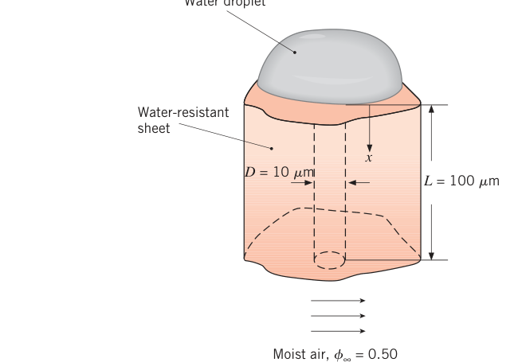
假设（Assumptions）：1. 稳态、等温、一维条件；2. 无化学反应；3. 孔垂直贯穿板厚、截面为圆形；4. 体系为水蒸气（A）与空气（B）构成的二元系统。
物性（Properties）：表 A.6，饱和水蒸气（298 K）：\(p_{A,\mathrm{sat}} = 0.03165\ \mathrm{bar}\)。表 A.8，水蒸气–空气（298 K）：\(D_{AB} = 0.26 \times 10^{-4}\ \mathrm{m^2/s}\)。
分析（Analysis）：
- 计及摩尔平均速度非零的影响，用式 (14.40)。单个微孔的传递速率：
总摩尔浓度按理想气体算：
按 6.7.2 节的界面平衡（饱和态），\(x = 0\) 处（顶面，饱和）：
\(x = L\) 处（底面，50% 相对湿度）：
代入式 (1)：
- 忽略摩尔平均速度的影响时，式 (14.32) 退化为 \(N_{A,x}'' = -C D_{AB}\,dx_A/dx\)（\(C\) 为常数、通量与 \(x\) 无关），单孔速率：
计及平流的速率略高。
- 温度敏感性：质扩散率按式 (14.14) 随 \(D_{AB} \sim T^{3/2}\) 变化，在 \(300 < T < 360\ \mathrm{K}\) 范围重算，结果见图。蒸发速率对温度依赖显著——主要来源是水蒸气饱和压强 \(p_{A,\mathrm{sat}}\) 随温度的剧烈变化（查表 A.6 可见）。
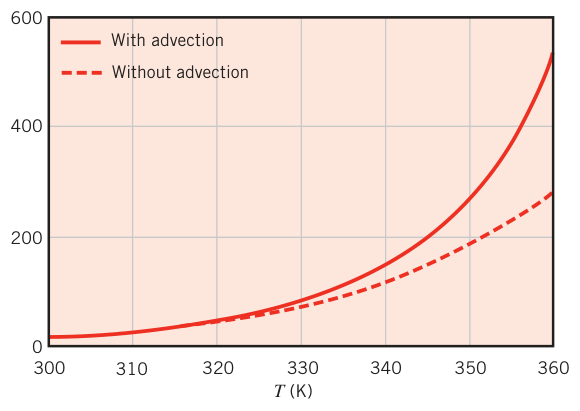
点评（Comments）：
- 整块包装材料的总蒸发速率 = 单位面积孔数 × 单孔蒸发速率。
- 推导中假设了压强恒定。摩尔平均速度非零，就必须有压强梯度克服孔壁摩擦（孔竖放还有静压差）。摩擦压降可以这样估：先由式 (14.17) 求质量平均速度 \(v_x = (n_{A,x}'' + n_{B,x}'')/\rho = n_{A,x}''/\rho = N_{A,x}''\mathcal{M}_A/\rho = N_{A,x}\mathcal{M}_A/(A_{\mathrm{pore}}\rho)\)，再按圆管充分发展流动（式 8.14）：
混合物绝大部分是空气，运动黏度取空气的。取最不利的 \(T = 360\ \mathrm{K}\)（此时 \(N_{A,x} = 530 \times 10^{-15}\ \mathrm{kmol/s}\)）：
摩擦压降 \(\Delta p_{\mathrm{friction}} = 860 \times 10^{3}\ \mathrm{Pa/m} \times 100 \times 10^{-6}\ \mathrm{m} = 86\ \mathrm{Pa}\)；孔竖放时静压差 \(\Delta p_{\mathrm{static}} = \rho_{\mathrm{air}} g L = 0.970\ \mathrm{kg/m^3} \times 9.8\ \mathrm{m/s^2} \times 100 \times 10^{-6}\ \mathrm{m} = 0.001\ \mathrm{Pa}\)。两者相对大气压都可忽略——恒压假设成立。
- 温度升高 → 饱和压强与水蒸气摩尔分数升高 → 摩尔平均速度变大 → 平流效应显著。反过来，水蒸气浓度小时可以忽略摩尔平均速度。"\(N_{B,x}'' = 0\) 且 \(x_A \ll 1\)"这两个条件合起来叫静止介质近似（stationary medium approximation）——下一节的主角。
14.3 静止介质近似#
14.1.3 节的菲克定律给出扩散通量；14.2 节看到分子运动本身会诱发整体流动，绝对（总）通量（式 14.21 或 14.32）= 扩散分量 + 平流分量。本节圈定一个可以忽略平流贡献的适用场景。
当少量组分 A 在静止的组分 B 中扩散时，传质相关的分子运动不足以诱发主体介质的显著整体运动。典型情形：稀薄气体或液体在静止液体或固体主体介质中的扩散——比如水蒸气穿过房间的固体墙壁。这时介质可视为静止，平流可以忽略。适用静止介质近似的场合：
而且 A 浓度小，总密度 \(\rho\)（或总浓度 \(C\)）近似就是主体介质 B 的值。
拓展：静止介质近似的确切条件
原书脚注把它说全了：主体介质 B 静止（\(n_B'' = 0\)、\(N_B'' = 0\)），且组分 A 稀疏（\(m_A \ll 1\)、\(x_A \ll 1\)）。两条缺一不可——上一节的蒸发立柱里 B 同样静止（\(N_{B,x}'' = 0\)），但 A 不是稀组分（水蒸气摩尔分数随温度升上去），平流项照样不可忽略。对照式 (14.21)、(14.32)：只有 \(m_A n''\)、\(x_A N''\) 这两项足够小，绝对通量才退化成纯扩散通量。
最重要的结论：静止介质近似让我们能把第 2～5 章的导热结果通过"导热 ↔ 扩散传质"类比整体搬过来。本章余下部分全部限定在这个近似内。
14.4 静止介质中的组分守恒#
能量守恒（第一定律）是传热分析的主线；组分守恒（conservation of species）在传质分析里扮演同样的角色。
14.4.1 控制体上的组分守恒#
对图 14.3 的控制体，仿照能量守恒式 (1.12c) 写组分质量守恒：任一组分 A 可因流体运动和扩散跨越控制表面进出（表面现象 \(\dot{M}_{A,\mathrm{in}}\)、\(\dot{M}_{A,\mathrm{out}}\)），也可在体内生成（化学反应 \(\dot{M}_{A,\mathrm{g}}\)）、积累储存（\(\dot{M}_{A,\mathrm{st}}\)）。速率形式：
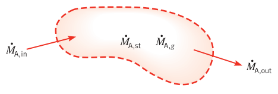
文字版：某组分进入控制体的速率，加上体内生成的速率，减去离开的速率，等于体内该组分储存质量的增长速率。生成项来自化学反应——例如分解反应 \(\mathrm{AB} \to \mathrm{A} + \mathrm{B}\) 会净生成 A 和 B、净消耗 AB。
14.4.2 质扩散方程#
现在导出与第 2 章热方程类比的质量（组分）扩散方程。介质是 A+B 二元混合物，静止介质近似成立（平流可忽略、只按扩散处理）。解出浓度分布后，配菲克定律就能求介质内任意点的组分扩散速率。
设 \(x\)、\(y\)、\(z\) 三个方向都可能有浓度梯度，在介质内取微分控制体 \(dx\,dy\,dz\)（图 14.4）。浓度梯度驱动 A 穿过各控制面输运；相对静止坐标，相对两表面的输运速率由泰勒展开联系：
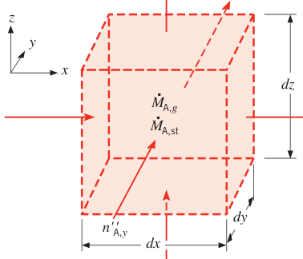
介质内可以有体积性的（均匀的，homogeneous）化学反应，而且可以不均匀。反应使 A 的体积生成率为 \(\dot{n}_A\)（kg/(s·m³)，每立方米混合物中 A 质量的增长速率）：
储存质量的变化率：
把流入（\(n_{A,x}''\)、\(n_{A,y}''\)、\(n_{A,z}''\)）与流出（式 14.44）代入式 (14.43)：
再代入式 (14.41) 的 \(x\)、\(y\)、\(z\) 分量：
摩尔口径同样推一遍：
后面都用简化版。若 \(D_{AB}\) 与 \(\rho\) 为常数，式 (14.47a) 变成：
若 \(D_{AB}\) 与 \(C\) 为常数，式 (14.48a) 变成：
式 (14.47b)、(14.48b) 与热方程（式 2.21）逐项对应：和热方程一样，每个坐标方向要两个边界条件；瞬态问题还要初始条件。边界与初始条件对应时，式 (14.47b) 的解 \(\rho_A(x,y,z,t)\)（或式 14.48b 的 \(C_A(x,y,z,t)\)）与式 (2.21) 的解 \(T(x,y,z,t)\) 同型——这就是"把第 2～5 章整体搬过来"的合法性来源。
柱坐标与球坐标形式可从热方程的对应式 (2.26)、(2.29) 平移过来，摩尔口径为：
柱坐标：
球坐标：
拓展：热-质类比词典（本章全程有效）
静止介质近似下，两套方程的字典是：温度 \(T\) ↔ 组分摩尔浓度 \(C_A\)（或质量口径的 \(\rho_A\)）；导热系数 \(k\) ↔ \(D_{AB}\)（摩尔浓度差做驱动势时，通量 \(N'' = -D_{AB}\nabla C_A\)）；热扩散率 \(\alpha\) ↔ 质扩散率 \(D_{AB}\)（瞬态方程里 \(1/\alpha \leftrightarrow 1/D_{AB}\)）；体积热生成 \(\dot{q}\) ↔ 体积组分生成 \(\dot{N}_A\)；恒壁温 ↔ 恒表面浓度；绝热（零热流）↔ 不渗透（零组分通量）；对流换热边界 ↔ 对流传质边界。对照表见 14.7 节表 14.2（瞬态版）。抓牢这张表，第 2～5 章的所有解法在传质里全部复用。
14.4.3 给定表面浓度的静止介质#
最典型的场景：组分 A 在 A+B 平板介质中一维扩散（图 14.5）。稳态、无均匀化学反应时，式 (14.48a) 退化为：
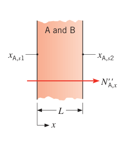
（\(\dot{N}_A = \dot{n}_A = 0\)。）设总摩尔浓度与扩散系数为常数，对图 14.5 的边界条件 \(x_{A,s1}\)、\(x_{A,s2}\) 求解：
线性分布，和平壁导热的温度分布同款。由式 (14.42)：
乘面积 \(A\)、代入 \(x_A = C_A/C\)，摩尔传递速率：
由此定义平壁介质中的组分扩散阻力（species diffusion resistance）：
和 3.1 节无内热源平壁一维稳态导热的结果放在一起，类比一目了然：\(k \leftrightarrow D_{AB}\)、\(\Delta T \leftrightarrow \Delta C_A\)。
类比延伸到圆柱与球。一维稳态、无反应时，式 (14.49)、(14.50) 分别退化为：
三式 (14.51)、(14.56)、(14.57) 都意味着摩尔传递速率 \(N_{A,r}\)（或 \(N_{A,x}\)）沿传递方向不变。\(C\)、\(D_{AB}\) 为常数时，给定表面浓度下的通解与扩散阻列在表 14.1。
表 14.1 静止介质、给定表面浓度的组分扩散解汇总（设 \(C\)、\(D_{AB}\) 为常数；\(N_{A,x}\) 或 \(N_{A,r} = (C_{A,s1} - C_{A,s2})/R_{m,\mathrm{dif}} = C(x_{A,s1} - x_{A,s2})/R_{m,\mathrm{dif}}\)）
| 几何 | 摩尔分数分布 \(x_A(x)\) 或 \(x_A(r)\) | 扩散阻 \(R_{m,\mathrm{dif}}\) |
|---|---|---|
| 平壁（厚 \(L\)，面积 \(A\)） | \((x_{A,s2} - x_{A,s1})\,x/L + x_{A,s1}\) | \(L/(D_{AB} A)\) |
| 圆筒壁（内半径 \(r_1\)，外半径 \(r_2\)，长 \(L\)） | \(\dfrac{x_{A,s1} - x_{A,s2}}{\ln (r_1/r_2)}\,\ln\!\left(\dfrac{r}{r_2}\right) + x_{A,s2}\) | \(\dfrac{\ln (r_2/r_1)}{2 \pi L D_{AB}}\) |
| 球壁（内半径 \(r_1\)，外半径 \(r_2\)） | \(\dfrac{x_{A,s1} - x_{A,s2}}{1/r_1 - 1/r_2}\left(\dfrac{1}{r} - \dfrac{1}{r_2}\right) + x_{A,s2}\) | \(\dfrac{1}{4 \pi D_{AB}}\left(\dfrac{1}{r_1} - \dfrac{1}{r_2}\right)\) |
注意一个要紧的限制：组分扩散阻虽然与导热阻完全类比，但跨多种材料串联扩散阻一般不合法——第 3 章导热阻串联的前提（界面温度连续）在传质里被破坏了：不同材料的界面两侧组分浓度不连续（14.5 节展开）。
【例 14.3】药片泡罩包装的水蒸气渗入
已知（Known）：药品长期暴露于高温、光照、高湿会失效。对潮湿敏感的药片/胶囊（比如放在浴室药品柜里），用泡罩包装（blister packaging）把药片与湿气的直接接触隔到最后服用前。包装由平板覆盖膜（lidding sheet）与带药槽的成形膜（formed sheet）组成。成形膜为聚合物材料，厚 \(L = 50\ \mu\mathrm{m}\)；每个药槽直径 \(D = 5\ \mathrm{mm}\)、深 \(h = 3\ \mathrm{mm}\)。覆盖膜是铝箔。水蒸气在聚合物中的二元扩散系数 \(D_{AB} = 6 \times 10^{-14}\ \mathrm{m^2/s}\)；铝对水蒸气完全不透。聚合物内、外表面处水蒸气的摩尔浓度分别为 \(C_{A,s1} = 4.5 \times 10^{-3}\ \mathrm{kmol/m^3}\)（外侧）与 \(C_{A,s2} = 0.5 \times 10^{-3}\ \mathrm{kmol/m^3}\)（内侧）。求经槽壁传到药片的水蒸气速率。
求（Find）：穿过槽壁的水蒸气摩尔扩散速率。
示意图（Schematic）：
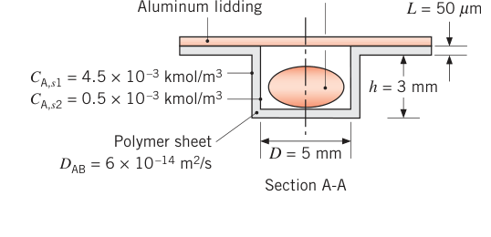
假设（Assumptions）：1. 稳态、一维条件；2. 静止介质；3. 无化学反应；4. 聚合物膜相对槽尺寸很薄，扩散按平壁处理。
分析（Analysis）：总传递速率 = 圆筒形槽壁部分 + 底部圆形端面部分。由式 (14.54)：
代入数值：
点评（Comments）：
- 质量口径的水蒸气扩散速率 \(n_{A,x} = \mathcal{M}_A N_{A,x} = 18\ \mathrm{kg/kmol} \times 0.32 \times 10^{-15}\ \mathrm{kmol/s} = 5.8 \times 10^{-15}\ \mathrm{kg/s}\)。
- 药品保质期与水蒸气渗入速率成反比。加厚膜能延长保质期但推高成本。泡罩包装选材要在保质期、成本、成形性、可回收性之间权衡。
14.5 边界条件与界面处的浓度不连续#
上一节的传递阻靠"恒定表面浓度"边界条件建立。表面 \(x = 0\) 处的恒定表面组分浓度条件写作：
式 (14.58) 在例 14.2、14.3 里已经用过；质量分数或质量浓度表述也等价。式子简单，但怎么定 \(x_{A,s}\)（或 \(C_{A,s}\)）不简单——往下看。
第二个与导热边界条件（表 2.2）对应的条件是表面处恒定组分通量。用菲克定律（式 14.13），表面 \(x = 0\) 处：
特例：静止介质中的不渗透表面（impermeable surface），\(\partial x_A/\partial x|_{x=0} = 0\)——组分版的"绝热面"。质量口径写法同理。
传质比传热多出来的那点麻烦，现在登场：温度跨界面连续，组分浓度跨界面通常不连续。拿水池晾在空气里说事：关心水蒸气向空气转移的速率，就要给出界面处空气侧的水蒸气浓度。池子里水的摩尔分数几乎为 1（忽略溶解的少量氧、氮），但把界面空气侧的水蒸气摩尔分数也取成 \(x_{A,s} = 1\) 就错了——水在界面两侧的浓度明显不连续。一般规则：跨两种材料的界面浓度边界条件描述的是两侧浓度之间的关系，这种关系来自理论（如拉乌尔定律、亨利定律）或实验，下面介绍三种。
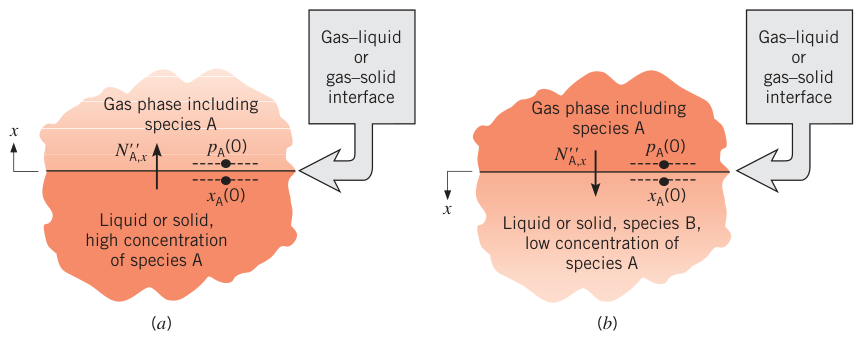
14.5.1 蒸发与升华#
常见场景：组分 A 因液面蒸发（evaporation）或固面升华（sublimation）进入气流（图 14.6a）。关心气相一侧，界面（\(x = 0\)）处气相中 A 的浓度（或分压）用拉乌尔定律（Raoult's law）确定：
其中 \(p_A\) 是气相中 A 的分压，\(x_A\) 是液相或固相中 A 的摩尔分数，\(p_{A,\mathrm{sat}}\) 是表面温度下 A 的饱和压强。拉乌尔定律的适用条件：气相可按理想气体处理，且液/固相中 A 浓度高。若液/固相是纯 A（\(x_A = 1\)），式 (14.60) 简化为 \(p_A(0) = p_{A,\mathrm{sat}}\)——界面蒸气分压就是界面温度下的饱和压强，查标准热力学表即可。例 14.2 与 6.7.2 节用的正是这个条件。
14.5.2 气体在液体与固体中的溶解度#
反过来：组分 A 从气相进入液体或固体 B（图 14.6b）。关心液/固相内部的传质，需要界面处 A 的浓度当边界条件。若 A 在液体中只有弱溶解（\(x_A\) 小），用亨利定律（Henry's law）把液相中 A 的摩尔分数与液外气相中 A 的分压联系起来：
系数 \(H\) 叫亨利常数（Henry's constant），部分水溶液的值见表 A.9。\(H\) 随温度变化；压强依赖在 \(p\) 不超过 5 bar 时一般可忽略。
气–固界面的条件：气体 A 溶解于固体 B 形成固溶体时，固体内的传质与固体结构无关、按扩散过程处理。（若固体孔隙率强烈影响气体输运，有时可按 3.1.5 节多孔介质导热的类比处理，更复杂的要靠专门教材。）把气体与固体按固溶体处理，界面处固体中气体的浓度由物性溶解度（solubility）\(S\) 给出：
\(p_A(0)\) 是界面邻接气体的分压（bar）。\(C_A(0)\) 的单位是每立方米固体中 A 的千摩尔数，所以 \(S\) 的单位是 kmol/(m³·bar)（或 atm 分压）。几种气–固组合的 \(S\) 见表 A.10。文献里溶解度常以"每立方米固体中溶解的 A 的标准状态（STP，0°C、1 atm）体积数，每 atm 分压"给出，记作 \(\tilde{S}\)；由 STP 下 1 kmol 占 22.414 m³，换算为 \(S = \tilde{S}/(22.414\ \mathrm{m^3/kmol})\)（bar 与 atm 之间可能还要换算）。
拓展：膜渗材料常把 D 与 S 打包
气体透过致密聚合物膜走"溶解—扩散"两步：先在膜表面按溶解度 \(S\) 溶入，再以质扩散率 \(D\) 穿膜。稳态通量 \(N'' = D(C_{A,s1} - C_{A,s2})/L = D S (p_{A,1} - p_{A,2})/L\)，工程上习惯把 \(D S\) 合成一个物性叫渗透系数（permeability）\(P\)：\(N'' = P(p_{A,1} - p_{A,2})/L\)。选膜材料时 \(D\) 与 \(S\) 缺一不可——扩散快但溶不进去（或反之）都透不多。例 14.4、14.5 就是这套算法的两个应用。
【例 14.4】熔融石英球罐里氦气的泄漏速率
已知（Known）：氦气储存在熔融石英（SiO₂）球形容器中，20°C，直径 \(D = 0.20\ \mathrm{m}\)，壁厚 \(L = 2\ \mathrm{mm}\)。初始充气压强 4 bar。求压强随时间下降的速率。
求（Find）：氦压强的变化率 \(dp_A/dt\)。
示意图（Schematic）：
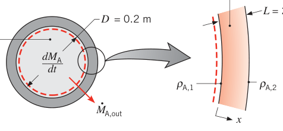
假设（Assumptions）：1. \(D \gg L\)，扩散可按平壁一维处理；2. 准稳态扩散（压强变化足够慢，任一瞬间扩散都可按稳态算）；3. 静止介质，密度均匀；4. 外侧大气中氦的分压可忽略；5. 氦为理想气体。
物性（Properties）：表 A.8，氦–熔融石英（293 K）：\(D_{AB} = 0.4 \times 10^{-13}\ \mathrm{m^2/s}\)。表 A.10，氦–熔融石英（293 K）：\(S = 0.45 \times 10^{-3}\ \mathrm{kmol/(m^3 \cdot bar)}\)。
分析（Analysis）：对球内氦气取控制体，应用组分守恒式 (14.43)。没有流入与生成：
氦的流出靠穿过熔融石英的扩散：
储存质量的变化：
组分平衡化为：
利用 \(\rho_A = \mathcal{M}_A C_A\) 与理想气体定律 \(C_A = p_A/(\mathcal{R} T)\)：
静止介质中穿过石英的绝对通量就是扩散通量，\(n_{A,x}'' = j_{A,x}\)，由菲克定律（式 14.12）：
在本题条件下：
\(\rho_{A,1}\)、\(\rho_{A,2}\) 是石英内、外表面处的氦质量浓度，由溶解度（式 14.62）与 \(\rho_A = \mathcal{M}_A C_A\) 计算：
（\(p_{A,i}\)、\(p_{A,o}\) 为石英内、外表面处的氦分压。）于是：
代回组分平衡：
代入 \(A = \pi D^2\)、\(V = \pi D^3/6\)：
代数值：
原书笔误：例 14.4 结果的指数
原书印的结果是 \(dp_A/dt = -2.63 \times 10^{-8}\ \mathrm{bar/s}\)。按原书自己列的代入式逐项算：\(6 \times 0.08314 \times 293 = 146.2\)，乘 \(0.4 \times 10^{-13}\) 得 \(5.85 \times 10^{-12}\)，乘 \(0.45 \times 10^{-3}\) 得 \(2.63 \times 10^{-15}\)，乘 \(4\) 得 \(1.05 \times 10^{-14}\)，除以 \(0.002 \times 0.2 = 4 \times 10^{-4}\)，得 \(-2.63 \times 10^{-11}\ \mathrm{bar/s}\)。正确答案的指数是 \(-11\)，不是 \(-8\)（差 1000 倍）。也可以独立验算一遍：界面浓度 \(C_A(0) = S p_A = 1.8 \times 10^{-3}\ \mathrm{kmol/m^3}\)，通量 \(N_{A,x}'' = D_{AB} C_A(0)/L = 3.6 \times 10^{-14}\ \mathrm{kmol/(m^2 \cdot s)}\)，泄漏速率 \(\dot{N} = 4.5 \times 10^{-15}\ \mathrm{kmol/s}\)，除以罐容 \(V = 4.19 \times 10^{-3}\ \mathrm{m^3}\)、再乘 \(\mathcal{R}T = 24.36\ \mathrm{m^3 \cdot bar/kmol}\)，同样得 \(-2.63 \times 10^{-11}\ \mathrm{bar/s}\)。
点评（Comments）：以上是最初（最大）的泄漏速率；随着罐内压强下降（\(p_A\) 变小），泄漏速率随之减小。
【例 14.5】氢气穿透塑料膜
已知（Known）：氢气被 3 bar 与 1 bar 分隔在塑料膜两侧，膜厚 \(0.3\ \mathrm{mm}\)，温度 25°C。氢在塑料中的二元扩散系数 \(8.7 \times 10^{-8}\ \mathrm{m^2/s}\)，氢在膜中的溶解度 \(1.5 \times 10^{-3}\ \mathrm{kmol/(m^3 \cdot bar)}\)。求穿过膜的氢质量扩散通量。
求（Find）：氢的质量扩散通量 \(n_{A,x}''\)（kg/(s·m²)）。
示意图（Schematic）：
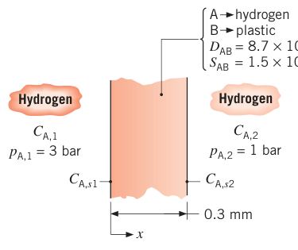
假设（Assumptions）：1. 稳态、一维条件；2. 膜为静止、无反应、总摩尔浓度均匀的介质。
分析（Analysis）：本题条件下式 (14.42) 退化为式 (14.53)：
膜两侧表面处的氢摩尔浓度由溶解度（式 14.62）确定：
代入：
换成质量口径（氢分子量 2 kg/kmol）：
点评（Comments）：膜两侧气相中的氢摩尔浓度 \(C_{A,1}\)、\(C_{A,2}\) 与膜内表面浓度不是一回事，可按理想气体状态方程 \(C_A = p_A/(\mathcal{R} T)\)（\(\mathcal{R} = 8.314 \times 10^{-2}\ \mathrm{m^3 \cdot bar/(kmol \cdot K)}\)）计算，得 \(C_{A,1} = 0.121\ \mathrm{kmol/m^3}\)、\(C_{A,2} = 0.040\ \mathrm{kmol/m^3}\)。注意 \(C_{A,s2} > C_{A,2}\)，但氢照样从膜向 \(p_{A,2} = 1\ \mathrm{bar}\) 的气体一侧传递——看似反常，其实是因为两个浓度基于不同的体积：一个按每立方米膜计，一个按每立方米气相计。所以绝不能拿 \(C_{A,s2}\) 与 \(C_{A,2}\) 的数值大小直接判断传质方向。
14.5.3 催化表面反应#
很多传质问题给定的是表面处的组分通量而不是浓度。典型：催化（catalysis）——用特殊表面促进非均相化学反应（heterogeneous chemical reaction，又称多相反应）。这种反应发生在材料表面，可视为表面现象、按边界条件处理（体积内发生的反应叫均匀反应/均相反应，按生成项处理，见 14.6 节）。一维扩散分析常能近似催化反应器的性能。
看图 14.7：催化表面置于气流中，促进涉及组分 A 的非均相反应。设反应以速率 \(\dot{N}_A''\)（每单位催化剂表面积、单位时间的摩尔生成率）产生 A。稳态时，从表面流出的组分速率必等于表面反应速率：
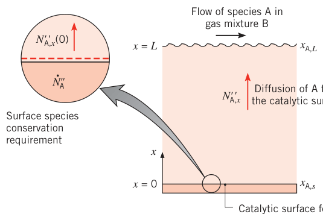
再设 A 从表面出发、穿过厚 \(L\) 的薄膜一维输运，膜内无反应。\(x = L\) 处的摩尔分数 \(x_{A,L}\) 对应主流状态、视为已知。其余组分合并记为单一组分 B，介质按静止处理，式 (14.48a) 退化为：
（\(D_{AB}\) 是 A 在 B 中的二元扩散系数，B 可以是多组分混合物。）设 \(C\)、\(D_{AB}\) 为常数，配合边界条件：
（式 14.65 来自式 14.63 与菲克定律式 14.42。）催化表面的反应速率 \(\dot{N}_A''\) 一般依赖表面浓度 \(C_A(0)\)。对一级反应（first-order reaction）且反应消耗 A 的情形：
其中 \(k_1''\)（m/s）是反应速率常数（双撇号标记表面反应，与体积反应的单撇号区分）。表面边界条件（式 14.65）随之化为：
解式 (14.64)，浓度分布为线性：
在催化表面处：
摩尔通量：
负号表示传质指向表面。两个极限情形特别值得关注：
- \(k_1'' \to 0\)：\(L k_1''/D_{AB} \ll 1\)，式 (14.69)、(14.70) 退化为 \(x_{A,s} \approx x_{A,L}\)、\(N_{A,x}''(0) \approx -k_1'' C x_{A,L}\)。反应速率由反应速率常数控制，扩散的限制可忽略——过程是反应限制（reaction limited）。
- \(k_1'' \to \infty\)：\(L k_1''/D_{AB} \gg 1\)，退化为 \(x_{A,s} \approx 0\)、\(N_{A,x}''(0) \approx -C D_{AB} x_{A,L}/L\)。反应速率由组分向表面的扩散速率控制——过程是扩散限制（diffusion limited）。
拓展：反应限制还是扩散限制，工程对策完全不同
判据就是无量纲数 \(L k_1''/D_{AB}\)（传质的"达姆科勒数"角色）。反应限制时表面浓度接近主流值，想提速就换更活泼的催化剂（加大 \(k_1''\)）；扩散限制时表面浓度已趋近零，加大 \(k_1''\) 白搭——只能强化传质：减薄膜厚 \(L\)、加大流速提高对流传质、用多孔/褶皱表面扩面积。燃料电池电极、汽车三元催化器、化学气相沉积都卡在这两种限制之间，先判型再动手。
14.6 含均匀化学反应的质扩散#
导热受内热源影响，组分扩散受均匀化学反应（homogeneous chemical reaction，发生在整个体积内）影响。仍限静止介质（绝对通量 = 扩散通量，式 14.41 或 14.42），再设稳态、\(x\) 方向一维、\(D_{AB}\) 与 \(C\) 为常数，式 (14.48b) 退化为：
体积生成率 \(\dot{N}_A\) 常用两种形式描述：
- 零级反应（zero-order reaction）：\(\dot{N}_A = k_0\)，反应以恒定速率进行，\(k_0\) 单位 kmol/(s·m³)；
- 一级反应（first-order reaction）：\(\dot{N}_A = k_1 C_A\)，反应速率正比于当地浓度，\(k_1\) 单位 s⁻¹。
\(\dot{N}_A\) 为正则净生成 A，为负则净消耗 A。很多应用里感兴趣的组分经一级反应转化为其他形式，式 (14.71) 变为：
线性齐次常微分方程，通解为：
其中 \(m = (k_1/D_{AB})^{1/2}\)，\(C_1\)、\(C_2\) 由边界条件定。这个形式与肋片导热方程（式 3.71）完全同型——肋片那一套数学原样搬过来。
看图 14.8 的场景：气体 A 可溶于液体 B，在液内一边扩散一边经历一级化学反应。溶液稀薄，界面处 A 的浓度是已知常数 \(C_{A,0}\)。容器底部对 A 不渗透，边界条件为：
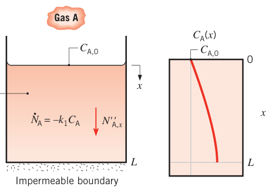
这组边界条件对应表 3.4 的情形 B（肋端绝热肋）。式 (14.73) 与式 (3.71) 同型，解为：
两个特别关心的量：底部浓度与跨气–液界面的通量。在 \(x = L\) 处用式 (14.74)：
界面上（\(x = 0\)）由菲克定律：
底部维持固定浓度、或容器无限深的情形，按表 3.4 的情形 C、情形 D 类比即得。
【例 14.6】抗生素能穿透多厚的生物膜
已知（Known）：生物膜（biofilm）是黏附在活体或惰性表面上的细菌菌落，能引起各种人体感染。膜内细菌导致的感染常是慢性的，因为敷在膜表面的抗生素很难穿透膜厚。考虑一种皮肤感染相关生物膜：抗生素（组分 A）敷在生物膜（组分 B）顶层，膜上表面维持药物浓度 \(C_{A,0} = 4 \times 10^{-3}\ \mathrm{kmol/m^3}\)。药物在膜内的扩散系数 \(D_{AB} = 2 \times 10^{-12}\ \mathrm{m^2/s}\)。抗生素被膜内的生化反应消耗，消耗速率正比于当地浓度：\(\dot{N}_A = -k_1 C_A\)，\(k_1 = 0.1\ \mathrm{s^{-1}}\)。要灭菌，抗生素的消耗速率至少要达到 \(0.2 \times 10^{-3}\ \mathrm{kmol/(s \cdot m^3)}\)（即 \(\dot{N}_A \le -0.2 \times 10^{-3}\ \mathrm{kmol/(s \cdot m^3)}\)）——绝对消耗速率再低，细菌长回来的速度就快过被杀死的速度。求能成功治疗的生物膜最大厚度 \(L\)。
求（Find）：可成功治疗的含菌生物膜最大厚度。
示意图（Schematic）：
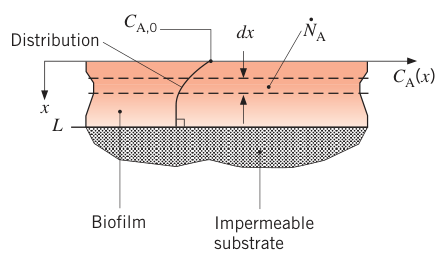
假设（Assumptions）：1. 稳态、一维条件；2. 静止、均匀介质，物性为常数；3. 生物膜底部不渗透。
分析（Analysis）：抗生素的绝对消耗速率在 \(x = L\) 处最小——那里药物浓度最低。所以要求 \(\dot{N}_A(L) = -0.2 \times 10^{-3}\ \mathrm{kmol/(s \cdot m^3)}\)。把一级反应与式 (14.74) 结合：
其中：
由式 (1) 解出最大允许厚度：
代数值：
点评（Comments）：更厚的生物膜治不了——药物消耗速率太高、而它穿过生物膜复杂聚合物基质的扩散速率太慢。把抗生素分子做小可以减小扩散阻力、穿透得更深，这是纳米医学的活跃研究方向。
14.7 瞬态扩散#
静止介质中稀组分 A 的瞬态扩散，可以直接类比第 5 章。设无均匀反应、\(D_{AB}\) 与 \(C\) 为常数、\(x\) 方向一维，式 (14.48b) 退化为：
初始浓度均匀：
边界条件按几何与表面条件配。例如厚 \(2L\) 的平壁、两侧表面受同样的对流条件：\(x = 0\) 为中平面，对称条件
表面浓度条件
式 (14.79) 是中平面对称要求。式 (14.80) 在传质毕渥数 \(Bi_m = h_m L/D_{AB} \gg 1\) 时成立：介质内扩散阻力远大于表面对流传质阻力时，流体中组分浓度近乎均匀（等于自由流浓度），表面浓度 \(C_{A,s}\) 由式 (14.60) 或 (14.61) 按自由流分压 \(p_A\) 算出。
把方程无量纲化，类比一目了然。定义无量纲浓度与无量纲时间：
代入式 (14.77)（\(x^* = x/L\)）：
初始与边界条件：
拿式 (14.83)–(14.86) 与第 5 章式 (5.37)–(5.40)（\(Bi \to \infty\) 情形，式 5.40 退化为 \(\theta^*(1, t^*) = 0\)，正对应式 14.86）逐一对照：方程组完全等价，解也必然等价。瞬态传热与传质变量的对应关系汇总在表 14.2——照表替换变量，第 5 章的结果就能解瞬态传质问题。例如把 \(\theta_o^*\)、\(Fo\) 换成 \(\gamma_o^*\)、\(Fo_m\)，式 (5.44) 就能算中平面浓度 \(C_{A,o}\)（\(Bi \to \infty\)：\(\zeta_1 = 1.5708\)，\(C_1 = 1.2733\)）。
表 14.2 瞬态扩散中传热与传质变量的对应
| 传热 | 传质 |
|---|---|
| \(\theta^* = (T - T_\infty)/(T_i - T_\infty)\) | \(\gamma^* = (C_A - C_{A,s})/(C_{A,i} - C_{A,s})\) |
| \(1 - \theta^* = (T - T_i)/(T_\infty - T_i)\) | \(1 - \gamma^* = (C_A - C_{A,i})/(C_{A,s} - C_{A,i})\) |
| \(Fo = \alpha t / L^2\) | \(Fo_m = D_{AB} t / L^2\) |
| \(Bi = h L / k\) | \(Bi_m = h_m L / D_{AB}\) |
| \(x/(2\sqrt{\alpha t})\) | \(x/(2\sqrt{D_{AB}\,t})\) |
5.5、5.6 节的结果用时当心（例 14.1 与表 A.8 已经示警）：很多液体、固体主体介质的质扩散率比热扩散率小得太多，传质傅里叶数 \(Fo_m\) 通常比热傅里叶数 \(Fo\) 小许多个数量级。所以：
- 5.5.2 与 5.6.2 的近似解（单项近似）只在 \(Fo_m > 0.2\) 成立——静止介质传质里常常够不着，基本没价值；
- 5.5.1 与 5.6.1 的精确级数解（式 5.42、5.50、5.51）可能要算很多项才收敛；
- 5.7 节的半无限大物体解反而最常用——质扩散慢，边界条件信息"渗入"主体介质的深度极小，半无限大假设很容易满足；
- 5.8 节的 Heisler 图表类结果全傅里叶数范围可用。
半无限大介质的误差函数解平移到传质就是：表面浓度突变为 \(C_{A,s}\) 时，
组分渗透深度（species penetration depth）按 \(\sqrt{D_{AB} t}\) 增长，与热渗透深度 \(\delta_p = 2.3\sqrt{\alpha t}\)（90% 判据）同款、只是把 \(\alpha\) 换成 \(D_{AB}\)。
【例 14.7】经皮药物贴片的剂量
已知（Known）：经皮给药（transdermal drug delivery）是药物以可控的时间释放经皮肤进入血液，通常靠贴在身上的贴片（patch）。优点：给药速率平稳温和、对系统的冲击小（不像静脉推注）；能给药给恶心或昏迷的病人（口服不行）；用着方便。贴片为方形，长宽 \(L = 50\ \mathrm{mm}\)，内部载体介质（host medium）初始药物质量浓度均匀：\(\rho_{A,p,i} = 100\ \mathrm{kg/m^3}\)。贴到皮肤上，皮肤初始药物浓度 \(\rho_{A,s,i} = 0\)。在贴片–皮肤界面（\(x = 0\)）处，贴片侧药物密度与患者侧药物密度之比由分配系数（partition coefficient）描述：\(K = 0.5\)。
- 求一周治疗期内输送给患者的总药量（剂量）。药物在贴片与皮肤内的扩散系数标称值分别为 \(D_{Ap} = 0.1 \times 10^{-12}\ \mathrm{m^2/s}\)、\(D_{As} = 0.2 \times 10^{-12}\ \mathrm{m^2/s}\)。
- 考察剂量对贴片质扩散率 \(D_{Ap}\) 与皮肤质扩散率 \(D_{As}\) 的敏感性。
求（Find）：一周内输送的总剂量；剂量对 \(D_{Ap}\)、\(D_{As}\) 的敏感性。
示意图（Schematic）：
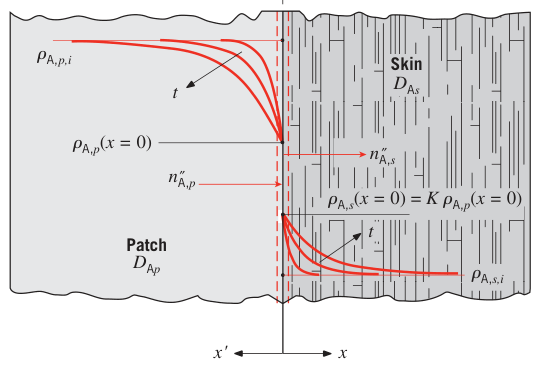
假设（Assumptions）：1. 一维条件、物性为常数；2. 贴片与皮肤均为半无限大介质；3. 无化学反应；4. 静止介质。
分析（Analysis）：
- 组分守恒方程对贴片与皮肤都适用。在上述假设下式 (14.47b) 变为：
与式 (5.29) 类比。初始条件：\(x < 0\) 一侧（贴片，坐标 \(x'\)）\(\rho_A(x < 0, t = 0) = \rho_{A,p,i}\)；\(x > 0\) 一侧（皮肤）\(\rho_A(x > 0, t = 0) = \rho_{A,s,i}\)。边界条件：
界面条件：两侧通量连续，
与图 5.9、式 (5.64)"两块半无限大固体贴合"的情形类比。额外要考虑组分的分配：
类比式 (5.65)（两半无限大物体接触的界面条件）：
代入式 (1c)、注意 \(\rho_{A,s,i} = 0\)，解出皮肤侧界面浓度：
患者得到的瞬时药物通量类比式 (5.61)：
式 (2) 代入式 (3)：
剂量 \(D\)（\(t = 0\) 到治疗时长 \(t_t\) 之间输送给患者的总药量）：
治疗时长 \(t_t = 7\ \mathrm{天} \times 24\ \mathrm{h/天} \times 3600\ \mathrm{s/h} = 605 \times 10^{3}\ \mathrm{s}\)，剂量为：
- 剂量对贴片与皮肤质扩散率的敏感性：对不同的 \(D_{Ap}\)、\(D_{As}\) 组合解式 (4)。下图给出 \(D_{Ap} = 0.1 \times 10^{-12}\ \mathrm{m^2/s}\) 与 \(0.01 \times 10^{-12}\ \mathrm{m^2/s}\) 两档、\(D_{As} = 0.1 \times 10^{-12}\ \mathrm{m^2/s}\)、\(0.2 \times 10^{-12}\ \mathrm{m^2/s}\)、\(0.4 \times 10^{-12}\ \mathrm{m^2/s}\) 三档的结果：任一质扩散率增大，剂量都增大。
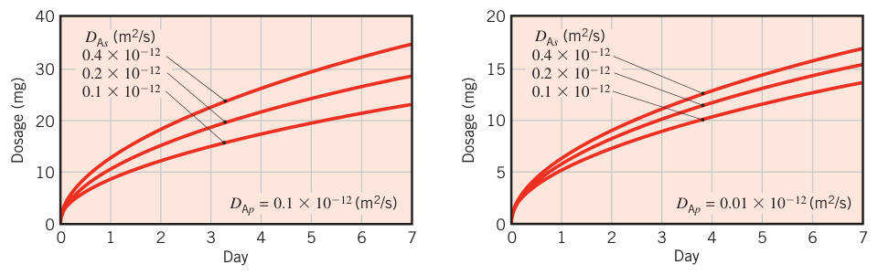
点评（Comments）：
- 皮肤外层（表皮，epidermis）的职责是抵御外界污染。经皮给药只对"分子极小、能穿过几乎不可穿透的表皮"的药物可行——传质考虑直接限制了可用药物的数量。
- 皮肤质扩散率因人而异，剂量最好对它不敏感。所以贴片载体介质（vehicle）要设计成控制剂量的限速环节：降低载体内的质扩散率 \(D_{Ap}\)，剂量对 \(D_{As}\) 的敏感性就下降（对比第 2 问两组图）。一般设计原则：\(D_{Ap}/D_{As} \ll 1\)。
- 贴片按半无限大介质设计。该假设有效所需的贴片厚度可这样估：算出治疗期内载体中药物密度被消耗掉 5%（即降至 \(\rho_{A,p,i}\) 与 \(\rho_{A,p}(x=0)\) 之差的 95% 位置）的深度。类比式 (5.60)，与 5% 消耗对应的组分渗透深度 \(\delta_{p,c}\) 由下式确定：
求出 \(\delta_{p,c} = 690 \times 10^{-6}\ \mathrm{m} = 0.69\ \mathrm{mm}\)。载体厚度大于 0.69 mm，半无限大假设就成立。 4. 若载体比这个渗透深度薄得多，实际剂量在一周治疗期结束前就会低于预期。贴片设计要权衡：(a) 装够药量保证半无限大行为；(b) 控制成本。实际上治疗期结束后载体里还剩 95% 以上的药物——用完的贴片要妥善处置。
14.8 小结#
本章聚焦静止介质中的扩散传质。传递速率通常不大（液体、固体里尤其小），但过程对很多技术以及环境、生命科学都是命门。以下自测问题检验你是不是真懂了。
原书章末自测问题（14.8 节复习用）
- 把方糖放进咖啡：糖在咖啡中分散的驱动势是什么？咖啡静止时分散的物理机制是什么？搅拌后呢？（浓度梯度；分子扩散；对流混合）
- 混合物中某组分的摩尔浓度与质量密度是什么关系？（\(\rho_i = \mathcal{M}_i C_i\)）
- 混合物的质量密度怎么定义？摩尔浓度呢？（各组分求和）
- 用菲克定律求混合物中组分的质量/摩尔通量时，具体求出的是什么？（相对混合物平均运动的扩散通量）
- 什么条件下组分扩散通量等于该组分输运的绝对通量？（静止介质近似：B 静止且 A 稀薄）
- 静止介质近似是什么？
- 静止介质内既有扩散又有均匀化学反应生成（或消耗）时，组分通量 \(N_A''\) 与位置无关吗？（一维稳态时与位置无关，与无反应情形一样；无反应时它才严格不变）
- 什么条件下可用扩散阻由介质内、外表面浓度求组分通量？（单种静止介质、\(C\) 与 \(D_{AB}\) 常数、给定表面浓度、无界面浓度跳变问题）
- 传热里界面两侧温度相等（平衡要求）；气相与液相（或固相）中同一化学组分的浓度也相等吗？（不——浓度跨界面不连续）
- 拉乌尔定律是什么？气相组分的分压与相邻液/固相中同一组分的摩尔分数什么关系？
- 亨利常数是什么？气体在液体中的浓度随气相分压怎么变？随液温怎么变？（线性增；温度升高溶解度下降，即 H 增大）
- 均相反应与非均相反应的区别？（体积生成项 vs 表面边界条件）
- 催化过程说是 reaction limited（反应限制）意味着什么？diffusion limited（扩散限制）呢？（前者反应速率常数控制、表面浓度接近主流；后者扩散控制、表面浓度趋近零）
坑与陷阱#
8 个容易踩的坑
- 浓度跨界面不连续，数值大小不能拿来比方向：例 14.5 里膜内表面浓度 \(C_{A,s2} = 1.5 \times 10^{-3}\) 比气相浓度 \(C_{A,2} = 0.040\) 小，但氢照样从膜流向气相——两个浓度按不同体积定义，没有可比性。判断方向永远看化学势（分压、活度），本题就是看两侧的分压与溶解度。
- B 不动不等于静止介质近似成立：蒸发立柱里 \(N_{B,x}'' = 0\)（B 净通量为零），但摩尔平均速度非零、A 的平流项 \(x_A N_{A,x}''\) 必须保留。静止介质近似 = B 静止 且 A 稀薄（\(m_A \ll 1\)、\(x_A \ll 1\)），两条同时满足才能把绝对通量当扩散通量（式 14.41、14.42）。
- 质量平均速度与摩尔平均速度是两个量：\(\mathbf{v} = m_A\mathbf{v}_A + m_B\mathbf{v}_B\)（式 14.18），\(\mathbf{v}^* = x_A\mathbf{v}_A + x_B\mathbf{v}_B\)（式 14.29），一般不相等。守恒方程（第 6 章那套）只用 \(\mathbf{v}\)；\(\mathbf{v}^*\) 只配摩尔通量分解用。配对关系：\(\rho\)–\(\mathbf{v}\)–\(\mathbf{n}''\)，\(C\)–\(\mathbf{v}^*\)–\(\mathbf{N}''\)。
- 扩散阻不能像导热阻那样跨材料串联：表 14.1 的扩散阻只在单一介质内有效。第 3 章串联热阻的前提是界面温度连续，而传质的界面两侧浓度天然不连续（拉乌尔、亨利、溶解度各管一种跳变），多层复合介质的传质必须逐层列边界条件，不能抄热阻网络。
- 菲克定律的梯度是"分数"的梯度：式 (14.12)、(14.13) 里是 \(\nabla m_A\)、\(\nabla x_A\)。想直接对 \(\nabla C_A\) 用 \(-D_{AB}\nabla C_A\)，前提是 \(C\)（或 \(\rho\)）为常数——否则梯度里还藏着 \(C(x)\) 的变化，直接替换会错。例 14.1 能换、是因为 \(x_A \ll 1\)。
- 第 5 章的近似解在传质里基本失效：单项近似（5.5.2、5.6.2）要求 \(Fo_m > 0.2\)，而液固介质的 \(D_{AB}\) 小到 \(Fo_m\) 几乎不可能超过 0.2。要用第 5 章工具时先算 \(Fo_m\)：够不着就上半无限大误差函数解（它反而最常用），或者老实算精确级数。
- 拉乌尔定律与亨利定律各管一头：拉乌尔管"液/固相里 A 是主体"（\(x_A \to 1\)，蒸气压按纯组分饱和压强打折）；亨利管"A 在液相里只是微溶"（\(x_A\) 小，浓度按 \(p_A/H\) 线性给）。用反了边界条件，表面浓度差一个数量级都正常。气–固走溶解度 \(S\)：\(C_A(0) = S\,p_A(0)\)。
- \(D_{AB}\) 随温度、压强跑得厉害：气体按 \(\sim T^{3/2}/p\)（式 14.14），液体随温度升高而增大，查表值不在目标温度就先修再算（例 14.1 的 293 K 修正）。蒸发类问题的温度敏感性主要不是来自 \(D_{AB}\)，而是来自饱和压强 \(p_{A,\mathrm{sat}}(T)\) 的指数式暴涨（例 14.2 的图线）。
速览#
- 浓度度量：\(\rho_i = \mathcal{M}_i C_i\)（式 14.1）、\(m_i = \rho_i/\rho\)、\(x_i = C_i/C = p_i/p\)（理想气体，式 14.11），各自归一化（式 14.6、14.7）。
- 菲克定律：\(\mathbf{j}_A = -\rho D_{AB}\nabla m_A\)（式 14.12）、\(\mathbf{J}_A^* = -C D_{AB}\nabla x_A\)（式 14.13）；负号 = 沿浓度降低方向扩散。
- 质扩散率 \(D_{AB}\)：气体 \(10^{-5} \sim 10^{-4}\)、液体 \(10^{-10} \sim 10^{-9}\)、固体 \(10^{-14} \sim 10^{-12}\ \mathrm{m^2/s}\)；理想气体 \(\sim p^{-1}T^{3/2}\)（式 14.14），二元互逆 \(D_{BA} = D_{AB}\)（式 14.25）。
- 通量分解：绝对通量 = 扩散 + 平流，\(\mathbf{n}_A'' = \mathbf{j}_A + \rho_A\mathbf{v}\)（式 14.20）、\(\mathbf{N}_A'' = \mathbf{J}_A^* + C_A\mathbf{v}^*\)（式 14.31）；二元扩散通量互抵 \(\mathbf{j}_A + \mathbf{j}_B = 0\)（式 14.24）。
- 立柱蒸发（斯特芬问题）：\(N_B'' = 0\) 但平流不可略，浓度分布指数形（式 14.38、14.39），速率 \(N_{A,x}'' = (C D_{AB}/L)\ln[(1 - x_{A,L})/(1 - x_{A,0})]\)（式 14.40）。
- 静止介质近似（B 静止 + A 稀薄）下：\(n_A'' = j_A\)、\(N_A'' = J_A^*\)，第 2～5 章导热解法整体平移；质扩散方程 \(\nabla^2 C_A + \dot{N}_A/D_{AB} = (1/D_{AB})\partial C_A/\partial t\)（式 14.48b）对应热方程，\(\alpha \leftrightarrow D_{AB}\)。
- 三种几何的扩散阻（表 14.1）：平壁 \(L/(D_{AB}A)\)、圆筒 \(\ln(r_2/r_1)/(2\pi L D_{AB})\)、球 \((1/4\pi D_{AB})(1/r_1 - 1/r_2)\)；跨材料不可串联（界面浓度不连续）。
- 界面边界条件：恒表面浓度（式 14.58）、恒通量（式 14.59，零通量 = 不渗透）；蒸发/升华用拉乌尔定律 \(p_A(0) = x_A(0)p_{A,\mathrm{sat}}\)（式 14.60）；弱溶解用亨利定律 \(x_A(0) = p_A(0)/H\)（式 14.61）；气–固用溶解度 \(C_A(0) = S p_A(0)\)（式 14.62）。
- 催化表面反应：\(N_{A,x}''(0) = -k_1'' C x_{A,L}/[1 + (L k_1''/D_{AB})]\)（式 14.70）；\(L k_1''/D_{AB}\) 小 = 反应限制（\(x_{A,s} \approx x_{A,L}\)），大 = 扩散限制（\(x_{A,s} \approx 0\)、通量 \(= -C D_{AB} x_{A,L}/L\)）。均匀反应：一级反应解 \(\cosh\) 形（式 14.74–14.76），对应肋片（表 3.4 情形 B）。
- 瞬态扩散：变量替换 \(T \to C_A\)、\(\alpha \to D_{AB}\)、\(Bi \to Bi_m = h_m L/D_{AB}\)、\(Fo \to Fo_m = D_{AB}t/L^2\)（表 14.2）；\(Fo_m\) 通常太小，单项近似基本没用，半无限大误差函数解 \(C_A(x,t) = C_{A,s} + (C_{A,i} - C_{A,s})\,\mathrm{erf}(x/2\sqrt{D_{AB}t})\) 最常用。
术语速查#
| 英文 | 中文 | 一句话 |
|---|---|---|
| mass transfer | 传质 | 混合物中因组分浓度差而发生的质量迁移（不含宏观流动本身） |
| species | 组分 | 可被扩散、平流输运或经反应转化的可辨识分子（如 CO₂） |
| mass density (of a species) | 组分质量浓度（密度） | \(\rho_i\)，每立方米混合物中组分 \(i\) 的质量，kg/m³ |
| molar concentration | 摩尔浓度 | \(C_i\)，每立方米混合物中组分 \(i\) 的千摩尔数，kmol/m³ |
| mass fraction | 质量分数 | \(m_i = \rho_i/\rho\)，全套加和为 1 |
| mole fraction | 摩尔分数 | \(x_i = C_i/C = p_i/p\)（理想气体），全套加和为 1 |
| partial pressure | 分压 | 理想气体混合物中组分单独贡献的压强 \(p_i\)，道尔顿定律求和 |
| Fick's law | 菲克定律 | 扩散速率方程 \(j_A = -\rho D_{AB}\nabla m_A\)（式 14.12） |
| binary diffusion coefficient / mass diffusivity | 二元扩散系数 / 质扩散率 | \(D_{AB}\)，m²/s，菲克定律的输运物性，跨八个数量级 |
| diffusive mass flux | 扩散质量通量 | \(j_A\)，kg/(s·m²)，相对混合物质量平均运动的通量 |
| diffusive molar flux | 扩散摩尔通量 | \(J_A^*\)，kmol/(s·m²)，相对摩尔平均运动的通量 |
| absolute (total) flux | 绝对通量（总通量） | \(n_A''\) 或 \(N_A''\)，相对固定坐标的总通量 = 扩散 + 平流 |
| mass-average velocity | 质量平均速度 | \(\mathbf{v}\)（式 14.18），守恒方程专用；乘 \(\rho\) 得总质量通量 |
| molar-average velocity | 摩尔平均速度 | \(\mathbf{v}^*\)（式 14.29），乘 \(C\) 得总摩尔通量；不能进守恒方程 |
| advection | 平流 | 组分随混合物整体运动被携带的输运 |
| evaporation / sublimation | 蒸发 / 升华 | 液→气 / 固→气的相变传质，界面条件由拉乌尔定律给出 |
| stationary medium approximation | 静止介质近似 | B 静止且 A 稀薄，平流可略，绝对通量 = 扩散通量（式 14.41、14.42） |
| conservation of species | 组分守恒 | 进 + 生成 − 出 = 储存（式 14.43），传质版第一定律 |
| mass (species) diffusion equation | 质扩散方程 | \(\nabla^2 C_A + \dot{N}_A/D_{AB} = (1/D_{AB})\partial C_A/\partial t\)（式 14.48b），热方程的传质副本 |
| species diffusion resistance | 组分扩散阻力 | \(R_{m,\mathrm{dif}} = \Delta C_A/N_A\)（式 14.55），平壁 \(L/(D_{AB}A)\) |
| Raoult's law | 拉乌尔定律 | \(p_A(0) = x_A(0)p_{A,\mathrm{sat}}\)（式 14.60），蒸发/升华的界面条件 |
| Henry's law / Henry's constant | 亨利定律 / 亨利常数 | \(x_A(0) = p_A(0)/H\)（式 14.61），弱溶解气体的界面条件 |
| solubility | 溶解度 | \(S\)，kmol/(m³·bar)，气–固界面 \(C_A(0) = S p_A(0)\)（式 14.62） |
| heterogeneous / homogeneous reaction | 非均相 / 均相反应 | 表面反应（边界条件）/ 体积反应（生成项） |
| reaction rate constant | 反应速率常数 | 表面反应 \(k_1''\)（m/s，式 14.66）；体积反应 \(k_1\)（s⁻¹）、\(k_0\)（kmol/(s·m³)） |
| reaction limited / diffusion limited | 反应限制 / 扩散限制 | \(L k_1''/D_{AB} \ll 1\) 时反应常数控速 / \(\gg 1\) 时扩散控速 |
| mass transfer Biot number | 传质毕渥数 | \(Bi_m = h_m L/D_{AB}\)，介质内扩散阻与表面对流传质阻之比 |
| mass transfer Fourier number | 传质傅里叶数 | \(Fo_m = D_{AB}t/L^2\)，无量纲时间（式 14.82） |
| species penetration depth | 组分渗透深度 | \(\delta_{p,c} \sim \sqrt{D_{AB} t}\)，边界信息渗入介质的深度 |
| partition coefficient | 分配系数 | \(K\)，界面两侧浓度（密度）之比（例 14.7） |
| transdermal drug delivery | 经皮给药 | 药物经贴片穿过皮肤进入血液，例 14.7 的应用 |
原书脚注补记
- 14.1.1 节脚注："组分（species）"指可经扩散、平流输运或经化学反应转化的可辨识分子——单个原子到复杂多原子分子都行，把混合物（如空气）整体当一个"组分"也可以。
- 14.2 节脚注：只关心静止介质问题的读者可从 14.3 节直接读起；14.3 节脚注 5 给出了静止介质近似的完整条件（B 静止 + A 稀薄）。
- 14.5.3 节脚注：式 (14.47)–(14.50) 中的生成项来自体积内发生的化学反应——即均匀（均相）化学反应，14.6 节专门处理；表面催化反应属于非均相反应，按边界条件处理。